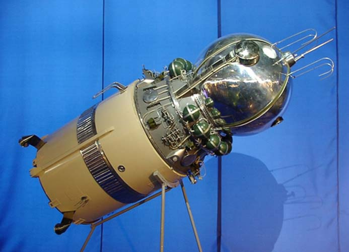

ВалентинаТерешкова.
Первый запуск первая женщина в космос, Валентина Владимировна Терешкова.
Дата рождения 9 марта 1934
Ю́рий Алексе́евич Гага́рин (9 марта 1934, Клушино, Гжатский (ныне Гагаринский) район, Западная область (ныне — Смоленская область), СССР — 27 марта 1968, возле села Новосёлово, Киржачский район, Владимирская область, СССР) — лётчик-космонавт СССР, Герой Советского Союза, кавалер высших знаков отличия ряда государств, почётный гражданин многих российских и зарубежных городовПерейти к разделу «#Почётные звания и награды».
Депутат Верховного Совета СССР VII—XI созывов (1966—1989), член Президиума Верховного Совета СССР (1974—1989). Глава Комитета советских женщин (1968—1987) и Союза советских обществ дружбы и культурной связи с зарубежными странами (1987—1992).Российский политик, депутат Государственной думы Российской Федерации, член Высшего совета партии «Единая Россия»[3]. В марте 2020 года предложила поправку к Конституции РФ, которая позволила действующему президенту России Владимиру Путину ещё дважды претендовать на пост президента.

«Востоком-6»
Одновременно с «Востоком-6» в космосе находился космический корабль «Восток-5», который пилотировал космонавт Валерий Быковский. В этом совместном вылете решались задачи медицинского, технического и политического характера. Изучалось влияние космического полёта на организмы мужчины и женщины, в частности, в этом полёте была окончательно решена проблема питания космонавтов. Космонавты получали четырёхразовое питание, состоящее из различных натуральных продуктов, и стало ясно, что экипаж космического корабля может во время полёта нормально питаться разнообразной земной пищей.
С учётом особенностей и возможностей космической техники понадобились особые кандидаты — люди абсолютно здоровые, профессионально подготовленные, дисциплинированные, возраст — около 30 лет, рост — не более 170 см, вес — до 68—70 кг.
В первом отряде космонавтов обозначились два лидера — Юрий Гагарин и Герман Титов.
3 апреля 1961 года состоялось заседание Президиума ЦК КПСС, которое проводил Н. С. Хрущёв. По докладу заместителя Председателя Совета Министров СССР Д. Ф. Устинова Президиум ЦК принял решение о запуске человека в космос.
Характеристики
Масса-4,7 т
Ракета-носитель-Восток 8К72К
Членов экипажа-1
Орбитальный модуль-Восток 3КА